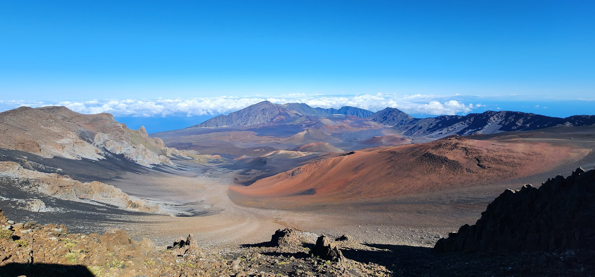

Explore Maui
Maui has coastal communities, green landscapes, and volcanic mountains. This page introduces three places that show different sides of the island.
Places to Explore
- Haleakalā
- Hāna
- Kāʻanapali
Haleakalā

Haleakalā is a large volcanic mountain on Maui. Its high-elevation landscape contrasts with the island’s coastal areas. It offers a way to learn about the volcanic origins of the Hawaiian Islands.
Hāna
Hāna is a community on eastern Maui, surrounded by green landscapes and coastal scenery. It introduces a different part of the island from Maui’s busy resort areas.
Kāʻanapali
Kāʻanapali is a coastal area on western Maui known for its beach and resort surroundings. Its oceanfront setting contrasts with the mountain landscape of Haleakalā.